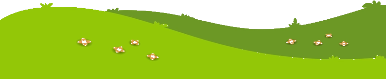

{{ kerstrun.datum }} · {{ kerstrun.uur }}
Kerstrun
AJOKKoop rondjes, wij lopen ze. Elk rondje van 400 meter brengt een kind een stapje dichter bij een onvergetelijk kamp.
{% include kerstrun-santa.html %}
Ho ho ho!
Nog {{ kerstrun.rondjes_doel | minus: verkocht | at_least: 0 }} rondjes te gaan!
Nog {{ kerstrun.rondjes_doel | minus: verkocht | at_least: 0 }} rondjes te gaan!
